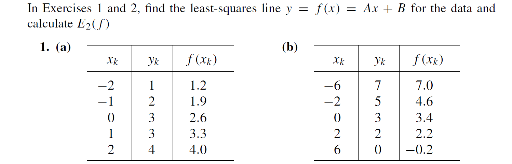
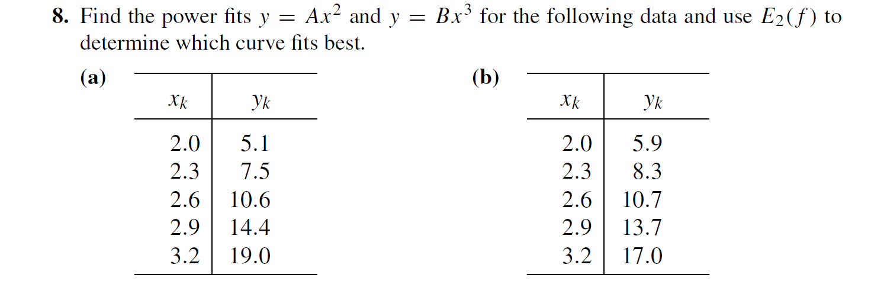
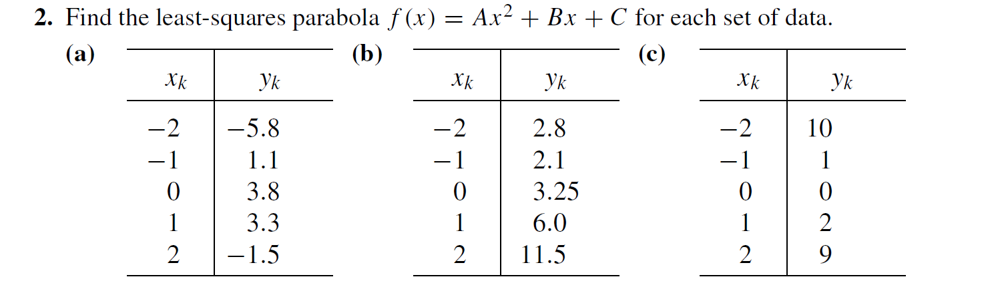
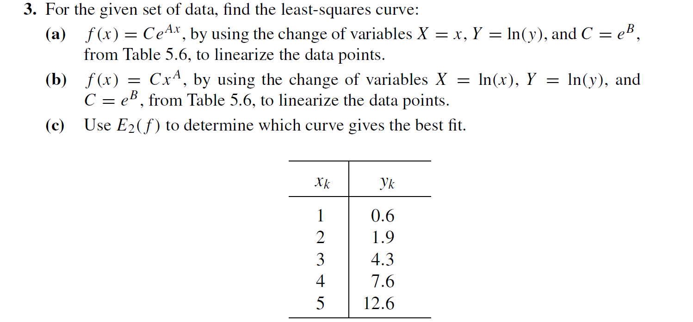

分别计算∑k=1Nxk2，∑k=1Nxk，∑k=1Nxkyk，N，∑k=1Nyk：
X = [-2; -1; 0; 1; 2];
Y = [1; 2; 3; 3; 4];
F = [1.2; 1.9; 2.6; 3.3; 4.0];
sum_X_2 = sum(X.^2)
sum_X = sum(X)
sum_XY = sum(X .* Y)
N = size(X, 1)
sum_Y = sum(Y)
得：
>> a1
sum_X_2 =
10
sum_X =
0
sum_XY =
7
N =
5
sum_Y =
13
求解方程组：
{(∑k=1Nxk2)A+(∑k=1Nxk)B=∑k=1Nxkyk(∑k=1Nxk)A+NB=∑k=1Nyk
代入
⎩⎪⎪⎪⎪⎪⎪⎪⎨⎪⎪⎪⎪⎪⎪⎪⎧∑k=1Nxk2=sum_X_2∑k=1Nxk=sum_X∑k=1Nxkyk=sum_XYN=N∑k=1Nyk=sum_Y
得：
{10A=75B=13
得：
{A=0.7B=2.6
求E2(f)=(N1∑k=1N∣f(xk)−yk∣2)1/2：
E2 = sqrt(1 / N * sum((F - Y).^2))
得：
E2 =
0.2449
所以，E2(f)=0.2449

分别计算A=(∑k=1Nxk2yk)/(∑k=1Nxk2⋅2)，B=(∑k=1Nxk3yk)/(∑k=1Nxk2⋅3)
X = [2.0; 2.3; 2.6; 2.9; 3.2];
Y = [5.1; 7.5; 10.6; 14.4; 19.0];
A = sum(X.^2 .* Y) / sum(X.^(2 * 2))
B = sum(X.^3 .* Y) / sum(X.^(2 * 3))
>> a8
A =
1.6866
B =
0.5902
所以，A=1.6866，B=0.5902
计算E2：
E2A = sqrt(1 / N * sum((A .* X.^2 - Y).^2))
E2B = sqrt(1 / N * sum((B .* X.^3 - Y).^2))
E2A =
1.2971
E2B =
0.2870
所以M=2时，E2=1.2971，M=3时，E2=0.2870

分别计算∑k=1Nxk4，∑k=1Nxk3，∑k=1Nxk2，∑k=1Nykxk2，∑k=1Nxk，∑k=1Nykxk，N，∑k=1Nyk。
X = [-2; -1; 0; 1; 2];
Y = [-5.8; 1.1; 3.8; 3.3; -1.5];
sum_X_4 = sum(X.^4)
sum_X_3 = sum(X.^3)
sum_X_2 = sum(X.^2)
sum_Y_X_2 = sum(Y .* X.^2)
sum_X = sum(X)
sum_Y_X = sum(Y .* X)
N = size(X, 1)
sum_Y = sum(Y)
>> a2
sum_X_4 =
34
sum_X_3 =
0
sum_X_2 =
10
sum_Y_X_2 =
-24.8000
sum_X =
0
sum_Y_X =
10.8000
N =
5
sum_Y =
0.9000
高斯消元法解方程组：
function [solution] = solve(UV)
solution = zeros(size(UV, 1), 1);
for i = 1:size(UV, 1) - 1
for j = i + 1:size(UV, 1)
UV(j, :) = UV(j, :) - UV(j, i) / UV(i, i) * UV(i, :);
end
end
for i = size(UV, 1):-1:1
UV(i, :) = UV(i, :) / UV(i, i);
solution(i) = UV(i, size(UV, 2));
for j = 1:i - 1
UV(j, :) = UV(j, :) - UV(j, i) / UV(i, i) * UV(i, :);
end
end
end
solve([sum_X_4, sum_X_3, sum_X_2, sum_Y_X_2;
sum_X_3, sum_X_2, sum_X, sum_Y_X;
sum_X_2, sum_X, N, sum_Y])
ans =
-1.9000
1.0800
3.9800
所以A=−1.9，B=1.08，C=3.98

因为y=CeAx带入X=x，Y=ln(y)，C=eB得，Y=AX+B
分别计算∑k=1NXk2，∑k=1NXk，∑k=1NXkYk，N，∑k=1NYk，使用高斯消元法求解方程组：
x = [1; 2; 3; 4; 5];
y = [0.6; 1.9; 4.3; 7.6; 12.6];
X = x;
Y = log(y);
sum_X_2 = sum(X.^2);
sum_X = sum(X);
sum_XY = sum(X .* Y);
N = size(X, 1);
sum_Y = sum(Y);
[A; B] = solve([sum_X_2, sum_X, sum_XY;
sum_X, N, sum_Y])
>> a3
A =
0.7475
B =
-1.0123
所以A=0.7475，B=1.2303
计算C：
C =
0.3634
所以f(x)=0.3634e0.7475x